器材库 > APS及其以下画幅可换镜头数码相机 > TL
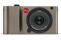
规格总览
产品类型
APS画幅可换镜头数码相机
发布日期
2016-11-09
影像规格
影像传感器
CMOS
影像传感器尺寸
23.6×15.7mm
总像素
1650万
有效像素
1620万
静态图像格式
JPEG, DNG
静态图像尺寸
JPEG: 4928×3264, 4272×2856, 3264×2160, 2144×1424, 1632×1080DNG: 4944×3278
静态图像质量
JPG 超精细, JPG 精细, DNG + JPG 超精细, DNG + JPG 精细
短片格式
MP4
短片尺寸
可选：1920 x 1080p, 30 fps或者1280 x 720p, 30 fps
镜头和对焦
镜头卡口
Leica L
兼容镜头
徕卡TL和SL镜头，徕卡M镜头配备徕卡M/对L的转化器，徕卡R镜头配备R对L的转换器
对焦系统类型
对比度自动对焦
曝光控制
曝光模式
全自动, 运动, 肖像, 风景, 夜景, 雪景/沙滩, 烟花, 烛光, 日落
快门速度
30秒至1⁄4000秒
闪光同步速度
1⁄180秒
曝光补偿
±3EV以1/3EV级调整
自动包围曝光
拍摄3张照片，以1/3EV 渐变，最大范围±3EV。
ISO感光度
自动, ISO 100 至12500
白平衡
自动, 预置白天，多云，卤素灯，阴影，电子闪光灯，两种手动设置，手动色温设置
自拍
2秒至12秒
连拍
大约5张/秒，最大连续拍摄12张，视存储卡性能。
闪光灯
内置闪光灯
弹出式
闪光指数
4.5（ISO 100）
闪光补偿
±3EV以1/3EV级调整
取景器/显示屏
LCD类型
TFT LCD
LCD尺寸
3.7英寸
LCD像素
1300万
文件输入/输出
内置存储容量
32GB
存储卡
SD/SDHC, SDXC
数据接口
微型USB
无线功能
Wi-Fi
电源
电池
徕卡BP-DC13锂电池（额定电压 7.2V, 容量985mAh）
续航能力
静态图像：可拍摄约400张
机身规格
材质
一体化铝制机身
颜色
银色, 黑色, 钛金属色
尺寸
134×69×33mm
重量
仅机身约339g / 含电池和存储卡约384g
其它
配件端口
热靴, 脚架螺丝孔
附件
背带, 2 条分离背带的安全销, 电池 (徕卡BP-DC13), 6个配接器插头的充电器 (徕卡BC-DC13), USB连接线
哈斯2017-07-15 23:213.81 分
操作性 3.50功能性 4.00美观性 5.00趣味性 4.00耐用性 4.50性价比 3.50解像力 3.00色彩还原 3.00
产品图 / 样片
TL
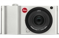
TL
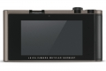
TL
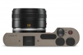
TL
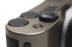
TL
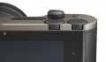
TL
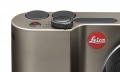
TL
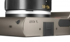
TL
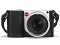
TL
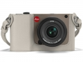
TL
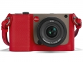
TL